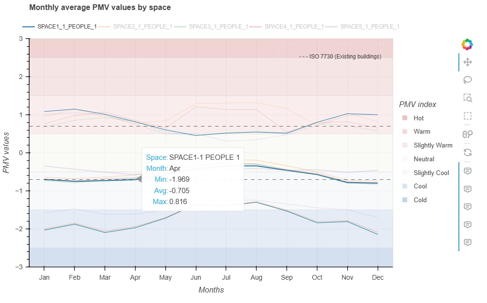
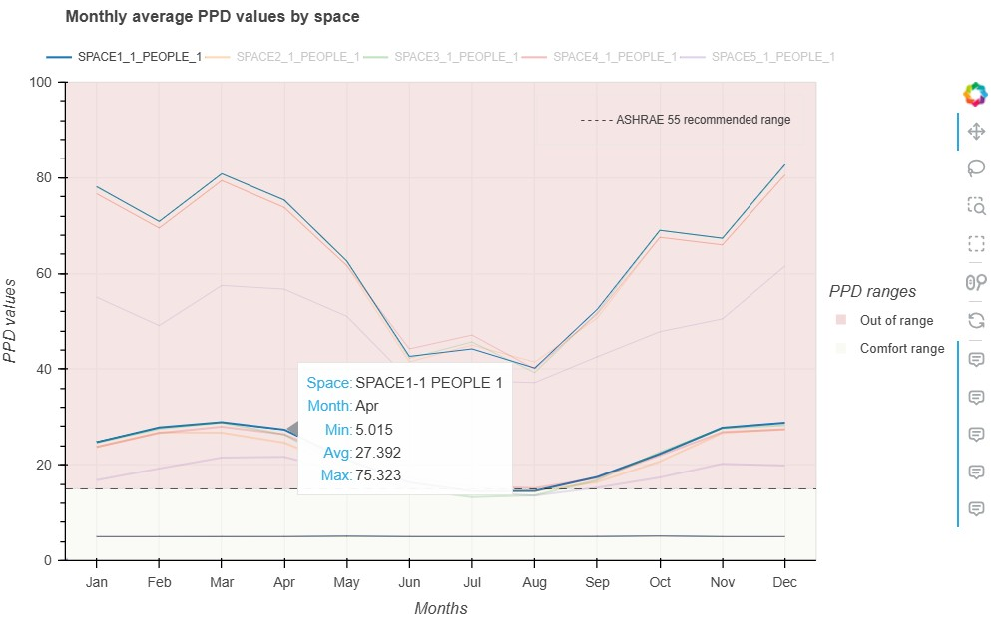

LineChart – PMV and PPD
Overview
This visualization displays the monthly thermal comfort indicators Predicted Mean Vote (PMV) and Predicted Percentage of Dissatisfied (PPD) computed from EnergyPlus simulations. It provides a clear temporal overview of comfort performance across spaces, highlighting periods of discomfort and helping evaluate HVAC operation, occupancy schedules, and microclimatic conditions.
Example Figures


LineChart Module
Line Charts for PMV and PPD
This module implements the lnchrt class used in BEPVis to generate
monthly PMV or PPD trend line charts for each space (People Object).
Features
Supports PMV and PPD monthly aggregated data
Displays average, minimum, and maximum per zone
Adds comfort annotations and recommended ranges (ISO / ASHRAE 55)
Generates interactive HTML outputs with Bokeh
Creates a clean legend, hover tool, and color-coded comfort bands
Input Format
The Excel sheet must contain the following columns:
- For each nominal_people_object_name:
<Name>
<Name>max
<Name>min
Example
Month | Office1 | Office1max | Office1min | Office2 | …
Authors: Ofelia Vera-Piazzini, Massimiliano Scarpa (Università Iuav di Venezia) License: MIT
- Visualizations.LineChart.LineChart.Replace_FromDict(string='?', dict={})[source]
Replace multiple characters in a string using a mapping dictionary.
- Parameters:
string (str) – Input string.
dict (dict) – Dictionary where key = old character, value = new character.
- Returns:
Cleaned string.
- Return type:
str
- class Visualizations.LineChart.LineChart.lnchrt(source_file_pathandname='?', s_nominal_people_object_name='?', html_file_pathandname='?', target='?', filesave_name='?')[source]
Bases:
objectGenerate PMV/PPD monthly line charts for all zones.
- Parameters:
source_file_pathandname (str) – Excel file containing PMV or PPD results.
s_nominal_people_object_name (list[str]) – List of People-Object names (spaces).
html_file_pathandname (str) – Optional output filename (deprecated, overwritten by filesave_name).
target (str) – ‘PMV’ or ‘PPD’.
filesave_name (str) – Output filename for the interactive HTML file.
Notes
The plot includes mean/min/max lines for each zone.
Comfort ranges are displayed depending on PMV/PPD.
Each zone gets a unique Glasbey color from
colorcet.